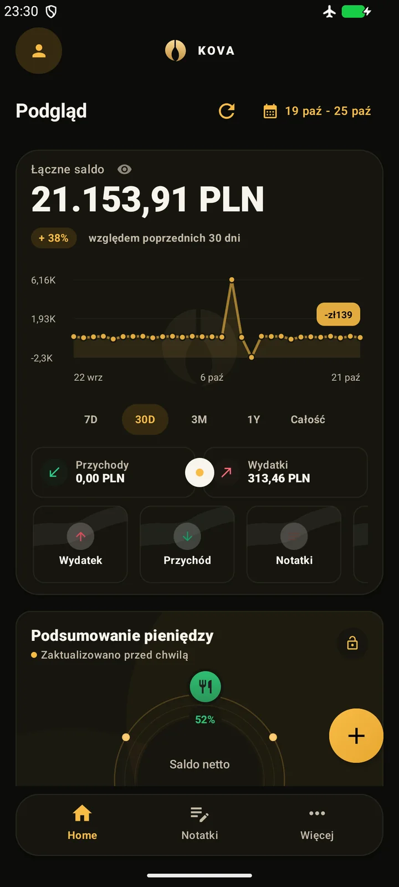
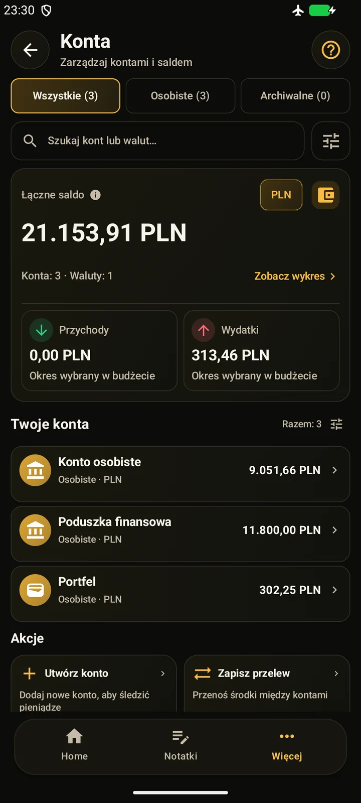

KOVA: Money & Budget · Android
Wydatki. Budżet.
Dochód z pracy.
Twoje dane finansowe zostają na telefonie.
Pracujesz w zmiennych godzinach? Połącz wydatki, budżet i szacowany dochód w jednym planie. KOVA na Androida: darmowa baza i opcjonalne KOVA Premium.
- Android 7.0+
- Darmowa baza
- Opcjonalne Premium
Przed premierą · publiczne pobieranie jeszcze niedostępne.
Sprawdź stan projektu

Czym jest KOVA?
Mniej chaosu w finansach. Więcej miejsca na Twoje plany.
KOVA to aplikacja na Androida do codziennych finansów osobistych. Łączy wydatki, budżet i godziny pracy, żeby łatwiej zobaczyć, co zostaje po rachunkach, i zaplanować kolejny miesiąc.
Dla studentów, osób pracujących i wszystkich, którzy chcą świadomie zarządzać własnymi pieniędzmi.
Dla Ciebie, jeśli…
Wiesz, na co wydajesz
Zapisuj codzienne wydatki i przeglądaj je według kategorii. Zobacz, które koszty najbardziej wpływają na Twój miesiąc.
Widzisz, ile zostało w budżecie
Ustal limity kategorii i sprawdzaj postęp podczas wydawania. Zaplanuj kolejny zakup, wiedząc, ile jeszcze możesz przeznaczyć na daną kategorię.
Planujesz przy zmiennym dochodzie
Zapisuj godziny pracy i stawki, aby szacować zarobki. Połącz swój grafik i miesięczny budżet w jednym planie.
Praca i dochód · wcześniejszy ekran demonstracyjny; wygląd może się zmienić.Dane finansowe zostają na telefonie. Bez podłączania banku i konta w chmurze KOVA. Opcjonalne zakupy Premium obsługuje oddzielnie Google Play.
Zobacz KOVA w praktyceAplikacja
Zajrzyj do KOVA.
Prawdziwe ekrany KOVA z przykładowymi danymi. Zobacz codzienne finanse, budżety i lokalne narzędzia. Główna galeria pokazuje interfejs po polsku.
Dotknij ekranu, aby zobaczyć go w całości.Planowane na pierwsze wydanie
Darmowa baza. Więcej z Premium.
Zacznij od codziennego porządkowania pieniędzy. Wybierz Premium, jeśli potrzebujesz dokładniejszych analiz lokalnych. Publiczne pobieranie i sprzedaż nie są jeszcze dostępne.
KOVA Free
Codzienne zapisy i kontrola nad własnymi danymi.
- Wydatki, budżety i podstawowe raporty
- Zapisy pracy i dostęp do swoich danych
- Szyfrowanie lokalne, kopia, eksport i usuwanie
KOVA Premium
Opcjonalna subskrypcja dla dokładniejszego obrazu finansów.
- Zaawansowane raporty i porównania
- Prognozy oparte na Twoich zapisach
- Analizy dochodu z pracy
W obecnej wersji szacowanie zmiennych wydatków wymaga co najmniej 7 dni obserwacji i 2 zapisów wydatków. Więcej regularnych zapisów daje pełniejszy obraz. Prognoza pozostaje szacunkiem.
Cenę i dostępność podamy przed premierą. Niektóre analizy wymagają odpowiedniej historii danych. Zakup i odświeżenie dostępu Premium wymagają Google Play oraz połączenia; darmowa baza pozostaje dostępna.
Przeczytaj projekt zasad subskrypcjiPrywatność
Prywatność jest dla nas najważniejsza.
Prywatność jest dla nas najważniejsza. Staramy się tworzyć KOVA jak najbezpieczniej, a dane finansowe zostają na telefonie. Opcjonalny zakup i przywracanie Premium obsługuje oddzielnie Google Play; analityka tej strony wymaga Twojej zgody.
Czytaj o bezpieczeństwieWarto wiedzieć
Kilka prostych odpowiedzi.
Zanim zaczniesz korzystać z KOVA.
Czy KOVA będzie bezpłatna?
Tak. Pierwsze wydanie planujemy z darmową bazą i opcjonalnym KOVA Premium. Codzienne zapisy, podstawowe raporty, dostęp do danych, lokalne szyfrowanie, kopia, eksport i usuwanie pozostają darmowe. Premium obejmuje zaawansowane raporty, prognozy i analizy dochodu z pracy. Cenę podamy przed premierą; publiczna sprzedaż jeszcze nie ruszyła.
Czy mogę już pobrać KOVA?
Publiczne pobieranie nie jest jeszcze dostępne. Obserwuj KOVA na Instagramie, aby śledzić wieści o premierze. Gdy wydanie będzie dostępne, na stronie pojawi się potwierdzony link do Google Play. Nie ogłosiliśmy daty premiery.
Czy aplikacja działa bez internetu?
Dane finansowe i darmowa baza działają lokalnie. Opcjonalny zakup, przywracanie i odświeżanie dostępu Premium korzystają z Google Play i wymagają połączenia. Obecny dostęp Premium może wymagać ponownego sprawdzenia po maksymalnie 48 godzinach lub restarcie telefonu. Nie usuwa to danych ani nie blokuje podstawowego użycia i eksportu. Nie oferujemy synchronizacji finansów w chmurze ani połączenia z bankiem.
Czy muszę podłączać konto bankowe?
Nie. KOVA nie wymaga haseł do banku. Konta w aplikacji służą do porządkowania zapisywanych przez Ciebie finansów.
Czy prognozy i kwoty netto są gwarantowane?
Nie. To szacunki oparte na zapisanych danych i konfiguracji. Mogą różnić się od rzeczywistych wypłat i nie zastępują dokumentów pracodawcy ani indywidualnej porady.
Czy ta strona ma dostęp do moich finansów?
Nie. Strona przedstawia projekt i nie łączy się z bazą finansową w telefonie. Opcjonalna analityka strony zależy od Twojej zgody.
Jak zabezpieczyć dane i zmienić telefon?
Utwórz ręczny eksport chroniony hasłem i przechowuj go bezpiecznie poza telefonem. Import wymaga potwierdzenia i zastępuje obsługiwany zakres wybranego profilu. To częściowa kopia, nie obraz całej aplikacji: osadzone obrazy notatek są uwzględnione, ale zewnętrzne załączniki i zdjęcia paragonów trzeba zabezpieczyć osobno. Nie ma automatycznego odzyskiwania z chmury ani hasła przez wydawcę.
Czy skanowanie paragonów działa offline?
OCR używa modelu dołączonego do aplikacji. Możesz zrobić zdjęcie lub wybrać je z galerii przez selektor Androida. Rozpoznawanie może się pomylić — przed zapisem sprawdź kwotę, walutę i datę. Odmowa dostępu do aparatu nie blokuje wyboru pliku.
Na jakie urządzenia i dla kogo powstaje KOVA?
KOVA powstaje na telefony z Androidem 7.0 lub nowszym. Aktualne źródła zawierają 27 języków interfejsu; weryfikacja zgodności i tłumaczeń trwa. Planowana grupa to osoby 13+, z uwzględnieniem wymagań sklepu i lokalnego prawa. Nie oferujemy wersji na iOS ani zegarki.
Dokumenty
Zasady KOVA.
Zasady prywatności aplikacji i subskrypcji są projektami oczekującymi na końcowe zatwierdzenie. Strona ma osobne informacje o cookies i analityce.
Bądź blisko premiery
Zrób miejsce na spokojniejszy plan finansów.
Obserwuj KOVA Development na Instagramie: zobacz aplikację i śledź wieści o premierze. Pierwsze publiczne wydanie nadal przygotowujemy.
Obserwuj KOVA na InstagramieWieści o premierze na Instagramie · @kova_moneyKOVA znajdziesz też na TikToku.